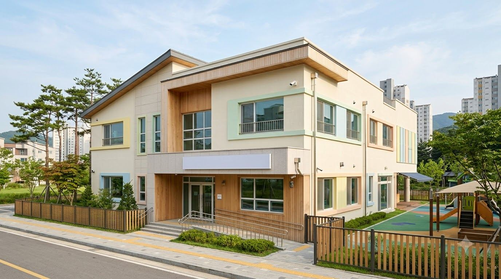

바람반 숲 기록장
10월 21일 수요일
- 날씨
- 맑다가 오후에 구름
- 기온
- 아침 8°C, 낮 17°C
- 절기
- 상강을 이틀 앞둔 날
- 걸은 길
- 참나무 길, 1.4km
오늘 숲에서 찾은 것
- 도토리 37개 (서윤이가 셌어요)
- 청설모가 도토리를 물고 갔어요
- 단풍잎이 어제보다 빨개졌어요
- 개미집을 낙엽으로 덮어 줬어요
숲은 날마다 다른 교실입니다. 같은 길을 걸어도 어제와 오늘 찾는 것이 다릅니다.
비 오는 날은 우비를 입고 웅덩이를 찾고, 눈 온 날은 동물 발자국을 따라갑니다. 미세먼지가 ‘나쁨’ 이상이거나 기상특보가 있는 날에만 실내 숲교실에서 지냅니다.
정해진 활동표 대신 아이가 하고 싶은 놀이를 고릅니다. 교사는 곁에서 지켜보고, 아이가 무엇에 오래 머무는지 기록합니다.
도토리를 세며 수를 익히고, 나무에 오르며 균형을 배웁니다. 국가 수준 누리과정의 다섯 영역을 숲 놀이 안에서 채웁니다.
아이들이 하루를 보내는 곳입니다. 견학 오시면 직접 둘러보실 수 있습니다.



오전에는 숲에서, 오후에는 교실에서 지냅니다. 방과후 과정은 저녁 7시 30분까지 운영합니다.
철마다 숲에서 할 수 있는 일이 달라집니다. 지금 숲에서 하는 놀이를 표시해 두었습니다.
2026학년도 기준입니다. 반마다 해, 달, 바람, 소리를 주제로 꾸민 교실을 씁니다.
만 5세, 2020년생
만 4세, 2021년생
만 4세, 2021년생

만 3세, 2022년생
2027학년도 신입 원아는 교육부 처음학교로에서 접수합니다. 만 3세반은 2023년생이 대상이며, 접수 일정은 11월 4일 입학설명회에서 안내합니다.
견학 오신 부모님들께 가장 많이 받은 질문입니다.
네, 갑니다. 우비와 장화를 입고 나가며, 영하 5°C 아래로 내려가는 날은 숲 시간을 1시간으로 줄입니다. 미세먼지 ‘나쁨’ 이상, 호우나 한파 같은 기상특보가 있는 날은 실내 숲교실에서 지냅니다.
교사가 매일 아침 아이들보다 먼저 숲길을 걸으며 부러진 가지와 위험한 곳을 살핍니다. 모든 교사가 응급처치 교육을 받았고, 반마다 구급 가방을 메고 다닙니다. 작은 긁힘은 생길 수 있으며, 다친 일은 그날 알림장으로 알려 드립니다.
4월부터 10월까지는 숲에 가기 전에 어린이용 기피제를 뿌리고, 돌아오면 목덜미와 귀 뒤를 확인합니다. 벌집은 숲길 점검 때 찾아 표시하고, 근처로는 가지 않습니다.
더러워져도 괜찮은 긴바지, 우비, 장화, 여벌 옷 한 벌을 사물함에 두세요. 겨울에는 내복과 방수 장갑이 필요합니다. 입학 후 계절별 준비물 목록을 따로 드립니다.
학습지 수업은 하지 않습니다. 도토리를 세고, 숲 기록에 이름을 쓰고, 나뭇가지 길이를 비교하며 자연스럽게 익힙니다. 해님반은 2학기에 초등학교 입학 준비 활동을 합니다.
아이들이 숲과 교실에서 지낸 모습을 반마다 올립니다.
원에서 직접 조리한 점심과 숲 간식입니다.
원장 선생님과 함께 아이들이 매일 걷는 숲길을 40분 동안 걸어 봅니다. 아이와 함께 오셔도 되고, 편한 신발이면 충분합니다.